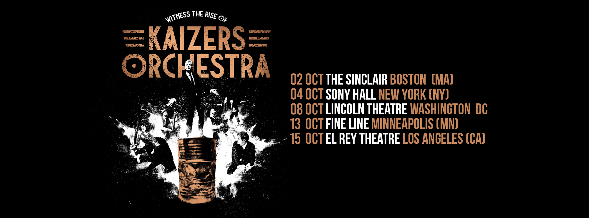

Dine gamle dager er nå
Fansen hadde mye spekulasjoner fordi noen venues har lagt ut på Twitter at Kaizers Orchestra skal komme til dem i USA og 11. mai annonerte banden på facebook at ryktene var sanne. Oktober 2024 skal Kaizers Orchestra på sin første turné i USA.